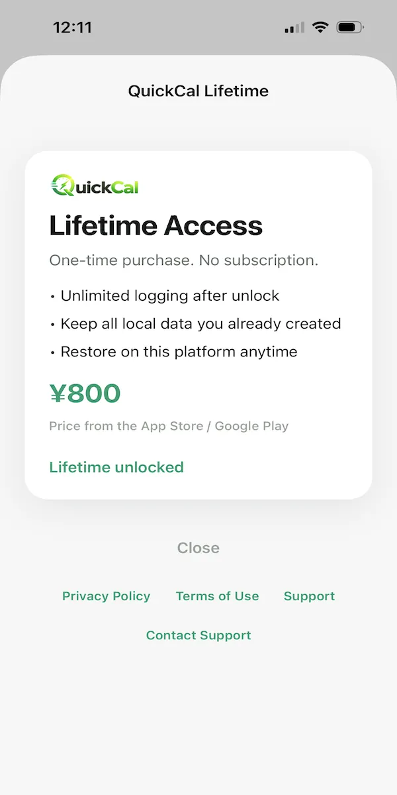

Quick Log
Log a saved food or meal in one tap.
Mobile app / Calorie tracking
QuickCal is a focused iOS and Android calorie counter built for speed. Users keep a personal food library on the device and log known meals in one tap or through a short portion step.

Overview
QuickCal is a small iOS and Android calorie counter designed around fast repeat logging. There is no account and no shared online food database; foods, logs, settings, planner data, and images stay on the device.
Many calorie apps make repeat logging slow by forcing users through large shared food catalogs. QuickCal treats setup as a one-time cost: save the foods you actually eat, pin frequent items, then log them quickly from Home.
I designed and built QuickCal as a solo project, including the native mobile UI, offline-first architecture, SQLite data layer, logging workflows, trial and lifetime purchase flow, backup tools, and iOS/Android release configuration.

Product focus
QuickCal keeps the experience small on purpose: a personal food library, one-tap Quick Log, portion multipliers when needed, and local SQLite storage — with a 14-day trial and a one-time lifetime unlock.
Core experience
Log a saved food or meal in one tap.
Use 1x, 1.5x, 2x, or a custom multiplier for portion-based items.
Maintain your own on-device food library with optional photos and pinned items.
Copy common USDA reference ingredients into your personal library without relying on an online food database.
Review, edit, delete, and undo logged entries while browsing previous days.
Set calorie and optional macro goals, with a local calorie planner that can calculate recommended targets.
SQLite storage, retention controls, ZIP backup/import, and no account or cloud sync required.
Contribution
Built QuickCal as an offline-first native mobile app with no application backend. SQLite is the source of truth for foods, logs, goals, settings, planner data, and entitlement state.
Built a four-tab native interface for Home, Library, History, and Settings, including quick-entry controls, pinned foods, Today’s Log, themes, and mobile-safe navigation.
Implemented typed calorie logging, one-tap Quick Log, portion-based logging, user-owned library items, pinned foods, optional local images, and an offline reference-food copy workflow.
Implemented versioned SQLite migrations, snapshot-based log history, configurable retention, clear-history and erase-all flows, and local ZIP export/import.
Implemented calorie and optional macro goals, day reset time, retention settings, themes, onboarding replay, and a local calorie planner.
Implemented a 14-day trial, one-time lifetime unlock, purchase restore, local entitlement caching, and EAS configuration for iOS and Android store builds.
Technology
Get the app
Download QuickCal on iOS or Android — offline-first calorie tracking with a personal food library.